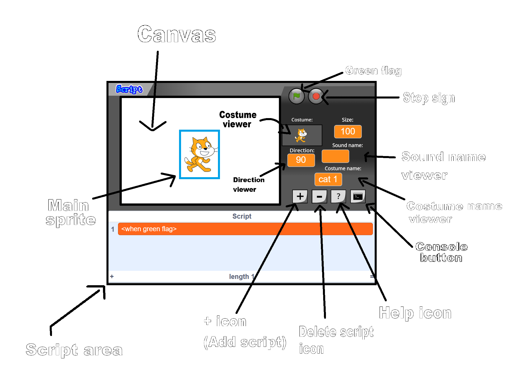

Documentation
1. INTRODUCTION
Welcome to the script documentation. The page where you learn the script language.
Script language is kinda hard for you to learn. That's why I created the documentation page!
If you want to get more information about this scratch-made language, go to About.
2. PARTS

2. SCRIPTS
Here's a list of scripts and their functions:
1. <set size to (100)> - Sets the sprite to the ordered size
2. <next costume> - Switches the sprite's costume to the next one
3. <show> - Shows the sprite
4. <hide> - Hides the sprite
5. <3D spin - rotate num (15)> - Shows the 3D spin and rotates at the direction speed that you want
6. <set outline to (1)> - Shows outline of the sprite. The outline will be based on the your thickness input
7. <clear pen and clones> - Clears the pen and delete clones
8. <play sound (Meow)> - Plays the sound
9. <play sound (Meow) until done> - Plays the sound until it's over
10. <set costume to (cat 1)> - Sets the costume of the sprite to the one that you want
11. <turn clockwise by (10)> - Turn the sprite clockwise by your input
12. <turn counterclockwise by (10)> - Turn the sprite counterclockwise by your input
13. <move (10) steps> - Moves the sprite by the specified number of steps
14. <change X by (10)> - Changes the x-coordinate of the sprite by the specified value
15. <change Y by (10)> - Changes the y-coordinate of the sprite by the specified value
16. <reset sprite x and y position> - Sets the x and y coordinates of the sprite to the original position
17. <switch backdrop to (White space)> - Switches the backdrop to the specified one
18. // Comment - This script does nothing because it is a comment